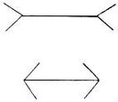

1936—Home Sewing Course
by Helen Hall
Series 1—First Steps in Sewing
Sewing Equipment
Necessary tools
A modern sewing room, well-equipped with all conveniences, is every home sewer's dream; but this luxury is seldom enjoyed by the average home sewer of moderate means. Her sewing room may be her bedroom or her kitchen with only a few tools with which to work, but her sewing may be a work of art.
An elaborate array of sewing tools is most convenient but not essential. All that is necessary to make the first dress is a sharp pair of shears, a thimble that fits, plenty of pins, an iron and a table, and needle and thread. It is the skill and not the tools that perfects the garment.
The Iron most important sewing tool
The most helpful tool in the work room is the iron and, strange to say, it is seldom mentioned as an important tool, and is usually not used until the dress is finished and "ready to be pressed."
The iron is the seamstress' best friend if she knows how and when to use it. It will save much time and perfect more of her work than many hours spent in basting. The iron is used in practically every step in constructive sewing and should be ready at all times. As the kitchen, where the family iron and ironing board can be used, is not always the best place to sew, it is advisable to purchase a two- or three-pound pressing iron that is generally used when traveling and is excellent for sewing. The following lesson will explain how to make a small press broad. This small iron and press board can be kept close at hand when sewing. A large iron will be used for tailoring and for final pressing.
Shears with bent handles
The shears are next in importance—good shears that actually cut a true line and do not hackle the goods. Shears are the large-size cutting instrument; the smaller ones are called scissors. The larger the hands and the heavier the material to cut, the larger the shears should be. The tailor uses very heavy shears but the dressmaker with lighter-weight material to cut and with smaller hands, should use the smaller shears.
Shears should be carefully selected; the style with the bent handles are preferable. When the shears are held in a cutting position the goods is not raised as far off the table as with shears that have straight handles. Dressmaking shears should measure from nine to ten inches the full length of the blades and handle. They should be kept sharp at all times as will be explained later.
Pinking Shears
The modern dressmaker's cutting tool is the pinking shears, made sufficiently light-weight that they can be easily handled. The edges of all seams are finished with notched edges as they are cut. This is a valuable aid to the woman who sews.
Scissors with large finger sections
Scissors are smaller and are used for small cutting, trimming and ripping. The regular style straight handles are satisfactory, but they should have the wide space for the fingers. Single finger spaces for sewing scissors are uncomfortable to use. Scissors can be of any size but six to seven inches in length is excellent.
Left-handed shears
Left-handed shears and scissors are a boon to the left-handed woman. She alone can appreciate this convenience as the right-handed shears bruise the flesh when cutting heavy material.
Razor blades for ripping
A razor blade is another sewing convenience if not a necessity. Use the kind with the ridge on one edge. This type is used in the Gem safety razor. If old blades are not available new ones can be purchased very cheap, or a safety blade ripper that has a handle can be purchased. How to rip with the razor blade will be explained later.
Tape, Small rule Long rule, Square
Measuring equipment must also be on hand, for the good dressmaker cannot sew accurately without it. Purchase a heavy tape line and do not at any time use it for a string. The cheap thin tapes are often not true and will stretch. If the tape line is heavy it will not be abused as quickly and will retain its shape. Keep a small ruler in the sewing basket, for it will be used often; a clearly marked foot rule is excellent. The yardstick is not used so often but is necessary for straightening long lines. The tailor's square is a convenience but not a necessity.
Thimble that fits
The thimble is not only a convenience but a necessity for sewing rapidly with fine stitches. One can sew without a thimble the same as one can walk without shoes but the thimble speeds the work and makes it more nearly perfect. Select a thimble that actually fits the shape of the finger. The long tapering finger requires a long tapering thimble. The blunt finger requires the short blunt thimble. Select the thimble carefully for there is a difference, it should not be loosely fitted as it will fall off; nor should it compress the end of the finger. It should stay on the finger and be comfortable.
Dressmakers' Pins No. 4
An abundance of pins is another necessity that is often forgotten. It requires an abundance of pins to fasten on a pattern (for the whole pattern should be pinned before cutting) and practically every portion is pinned to place before basting or stitching. Use pins that are of a convenient size to hold. Number 4 pins are convenient. Box pins are also more convenient than pins in the paper for they are easily picked up when working. If pins in papers are secured or if a box is purchased, place a handful in a small box with a close-fitted lid for general use. Keep new fresh pins for pinning all white materials. Cheap pins are made for pinning paper only for they make black marks on light materials.
Needles No. 7
A general supply of needles is also helpful. Different sizes are not necessary as very small needles are difficult to use and large needles are too long to use with the thimble and do not make small stitches or even sewing. Number 7 needles offer an average length and size, both for hand sewing and basting. A fold of heavy material wrapped around the arm of the sewing machine at the top will offer an excellent needle cushion when working. This may cover one of the oil holes and it must not be forgotten when oiling the machine. Crewel needles with the long eyes, are excellent for those who have poor eyesight. They can be purchased in the same sizes as the regular needle. There is also a clever threading device for the sewing machine that is offered at a nominal charge by the sewing machine companies. This makes it possible to thread the machine by hooking the thread through the needle. One can FEEL the threading rather than see it.
Bodkin for tailored loops
A bodkin is a blunt darning needle and will also be found useful. There is usually a bodkin among the assorted darning needles that are found in a large paper of assorted needles, or one can be purchased at any large store. One might be made at home in an emergency by breaking off the point of a heavy darning needle and filing off the rough edge. A bodkin is used for turning tailored loops.
Emery bag for smoothing needles
An emery bag is helpful if the hands perspire. It smoothes sticky needles and prevents them from rusting and even removes rust from the needles. It also keeps the point sharp.
Tracing wheel
A tracing wheel is seldom used on cloth but will be found very useful for duplicating pattern sections or tracing off patterns of dress sections when remodeling.
Tailor's chalk for marking
Tailors' chalk is a hard-pressed chalk that is made in small, flat squares. It is made in both white and colors and rubs off easily. It can be sharpened to a fine edge and is used for marking lines on the material. The colored chalk is used only for white material and then only sparingly. The white chalk is generally used. The paraffin marker is only used on wool as it must be removed with pressing and will leave an oily mark on silk.
Basting board free for the asking
A basting board is indispensable and can be secured free of charge for the asking. The dry-goods merchant discards the cardboard on which all materials are rolled. Cotton fabrics are rolled on heavy cardboard that is eighteen inches long and makes an excellent board to use for basting many seams, pockets, points, corners and inside applications. Directions for its use will be given later. This board can also be used to pin the material firmly in place when ripping.
Pleat board free for the asking
The long boards on which woolens are rolled make excellent boards for basting pleats and can be padded for pressing. A small press board to be kept on the sewing table can be made from one of the long, 27-inch boards that are discarded from the bolts of woolen materials. Pad it like the ironing board and lay it flat on the table. This makes an excellent board to use with small pressing iron, and it can be kept in the sewing drawer. It can also be slipped into some semi-finished sections for pressing them.
Sleeve board for much pressing
A sleeve board, or tailor's board, can either be made by a handy man, or a small one can be purchased at the department store. This board can be placed on top of the large ironing board or on the table but will also afford facilities for pressing into small places. It also raises the goods higher, and closer to the eye; and, with the seam raised on the sleeve board, the weight of the remainder of the dress rests on the table and does not draw the seam. The corner is also excellent for pressing darts and curved edges.
Tailor's Jack
The dressmaker's ironing board or tailor's jack is in constant use. It is a large sleeve board that can easily be made at home by a handy man. This board placed on top of the ironing board brings the work closer to the eye and elevates the seam for pressing.
Measurements: Top board 34 inches long or longer, tapering from an eight-inch width at one end to three inches at the other end. The base board can be made six inches wide and about 24 inches long. These two boards are joined together with a 2x4 nine inches long. The narrow end of the top board extends farther from the 2x4 than the wide end. Pad the top of the board and use for pressing. The narrow end makes an excellent rest for an inverted iron when pressing velvet.
Needle board for velvets
A needle board is practical only for the professional dressmaker as it is very expensive. It is a special board made of blunt needles and it is used for pressing all napped materials and velvets. If a needle board is not available, place the inverted pressing iron on the end of the sleeve board and draw the seams over the iron rather than pressing them flat. (See "pressing.") (Address of needle board manufacturer will be given upon request.)
Cutting table; a flat hard surface
It is always advisable to cut out material on a hard flat surface. If a large table is not available it is advisable to cut out on the floor rather than to cut on a bed. A sheet should first be placed on the floor to keep the material clean. Card tables placed close together make an excellent cutting surface and are just the right height if one wishes to sit when cutting. The card table makes an excellent work table after the dress is cut. It can stand beside the sewing machine and chair with the small iron and press board on it and will be ready for many kinds of sewing work.
Sewing machine that stitches well
Beautiful dresses can be made by hand but sewing on a machine that stitches well is much easier and quicker. The treadle machine will sew as well as the electric machine, but of course the electric operates without the effort of treading. There are many styles and makes of electric machines even to the small portable type. It will do all that the larger machine will do and can be carried to the most convenient place for sewing. There is not much actual machine-stitching on a dress, but there is some stitching throughout the construction.
Oil frequently
The sewing machine should be given a "drink" of oil quite often. Many abused sewing machines are blamed for poor running when it is the operators who have neglected them and allowed them to become gummed. If it runs hard, oil well with kerosene and run until it runs freely. Then oil with a good grade of sewing machine oil, and not a household utility oil, as it is too heavy.
Long mirror to secure the" Effect"
A long mirror is a convenience. It should be placed where the light will fall on the figure in front of the mirror. Direct sunlight is not advisable. If a long mirror is not available, a small wall mirror can be placed on the floor at a tilted angle to secure the effect of the lower edge of the skirt. A hand mirror should also be used to see the effect of the back of the garment.
Chest of drawers for supplies
Reserve a special place for sewing materials. If an extra drawer or set of drawers is not available use several boxes labeled at the ends. It is helpful to use several small boxes, such as candy boxes, for separate supplies—silk thread, cotton thread, darning thread, snaps and hooks, cards of buttons, assorted buttons, bias seam bindings and tapes. All these small boxes can be kept in one large box. These time-saving hints will make sewing more interesting because time will not be wasted in finding certain supplies.
Old patterns
If old patterns are saved, tie each complete pattern in its own envelope with a selvage for a string. This piece of the material will identify the pattern, and it will not be necessary to open all the patterns for identification.
Scraps
When the dress is finished, carefully flatten out all the scraps to be saved and roll them into a small roll and tie with the material. This will keep the material flat and it will be ready for use if needed later for remodeling.
Press cloths
Use a well worn piece of thin white cotton material for pressing if available. Otherwise purchase two yards of cheese cloth and fold double for pressing. This will suffice for all materials but heavy woolens as a great amount of moisture is never needed. There should be a second thin piece of cloth that is kept dry for pressing. Two press cloths and either a sponge or a wet wash rag is necessary. Dry them out when the sewing day is over. They should not remain wet and should be laundered often.
For pressing wool
A piece of flannel is excellent for placing over the press board when pressing wool. The right side of the wool is placed face down on the flannel. This will prevent the surface from becoming shiny, and is excellent for pressing napped woolens.
Questions—Equipment
- What are the most important tools for sewing?
- What is the most helpful tool in the sewing nook?
- Is the iron used often in good sewing?
- Is all pressing left to the last?
- What is the second most important tool?
- What kind of shears should be used?
- Why are pinking shears helpful?
- What are scissors and when are they used?
- Are there left-handed scissors?
- How are razor blades used?
- What kind of measuring tools should be used?
- Do all thimbles fit according to size only?
- Can one sew without a thimble?
- To what is a thimble compared?
- Should only a few pins be used?
- What sizes and kinds are excellent? Why?
- What kind of needles should be used?
- What is a good, average-size needle?
- What kind of needles should be used for poor eyesight?
- What is a bodkin?
- What is an emery bag used for?
- When is an emery bag a necessity?
- When is a tracing wheel used?
- What kind of tailor's chalk is used? When?
- What is a basting board?
- Where are they secured?
- What kind of a board is excellent for basting pleats?
- Where are they secured?
- How can a small press board be made?
- What is a sleeve board and when is it used?
- What is a tailor's jack?
- How is it made?
- What is a needle board?
- What kind of a cutting surface should be used?
- What is the importance of a sewing machine?
- Should the machine be oiled frequently?
- How is a gummed machine treated?
- Is a long mirror useful?
- Where is it placed to the best advantage?
- How can a small wall mirror be used to see the lower edge of the skirt ?
- What is a handy way to keep supplies?
- How can patterns be preserved?
- How can scraps be preserved?
Make samples of each problem. Use crepe paper.
SEWING MACHINE PRACTICE
Machine threading
Learn to sew correctly on the sewing machine before attempting to make a dress. The tensions should be perfectly adjusted and the machine should be threaded correctly before it will stitch perfectly. After it has been threaded, drop the needle into the bobbin section, holding the end of the top thread. Then pull out the bobbin thread and draw both threads to the back under the presser foot. This will start the stitch perfectly and will prevent the threads from being caught into the first stitches.
Starting and stopping the sewing machine
If the machine is of the treadle type, place both feet on the treadle, one foot higher than the other, and practice working the machine until an even motion is secured. The thread should be removed from the needle for this practice. Be sure to start the machine to run either forward or backward as the machine is to be made run; usually on the treadle machine start the wheel with the hand. The electric machine is made to start in one direction but the treadle machine may run backward. It is necessary to also stop the wheel with the hand on the treadle machine.
If the machine is electric, practice with the knee or foot control until the right touch is acquired to start and stop machine smoothly and not to run it too fast. The pressure of the foot or knee controls the speed.
How needles are blunted
Learn to stitch straight by following the stripe on striped material. Do not pull the goods at the back as this may draw the goods too rapidly and pull the point of the needle backward and it will strike the plate and be blunted. It will then draw the threads when stitching on fine materials and may produce a poor stitch.
Practice stitching curves
After the straight line can be followed, practice following curves. Mark on a sheet of paper curves inside of curves in one continuous line. Stitch the paper on these lines.
Stitch squares with needle as a point
Then mark squares on paper and learn to stitch to the points of the squares. When the point is reached, stop the machine with the needle DOWN into the point, then lift the needle bar and turn the goods. Drop the bar and continue with the stitching. All points are stitched in this manner.
Holding goods, gauging
Learn to stitch seams together, using plain materials with no lines and guide the stitching with the eye. In this case watch the distance between the cut edge and the edge of the presser foot and not the needle. Do not try to sew fast. One can hold the goods at the back to help hold it straight but the goods must not be drawn backward. The machine must feed the goods.
Long threads unnecessary
The larger part of the material should be held to the left of the needle with the seam under the arm of the machine. There are few exceptions to this rule. Always stop the needle with the take-up thread bar (at the left of the machine) raised high on the machine. If this bar is down, even if the needle is raised, the needle will be unthreaded when the bar lifts. If this bar is watched, it will not be necessary to draw out yards of surplus thread to waste when sewing. These long threads are inconvenient and are not necessary.
Stitch curves
Practice machine-stitching the inner edges of curves cut from material. Neck lines and armholes are stretched easily when tried on without the sleeves and the neck finish. Therefore the raw edge of loosely woven material should be machine-stitched even if the goods is heavy; coarse unbleached muslin or loosely woven wool will stretch as badly as voile under these conditions.
Easing in a stretched curve
For an example, cut out a circle and follow the edge in stitching, sewing as near to the cut edge as possible. Then cut a second piece of material and cut a large half circle for a neck and stretch it straight so as to stretch the curve. It can be drawn back to shape with stitching as is often necessary when a neck or armhole has been stretched.
Place the stretched curve on the machine and start to stitch on the end of the curve. Follow a line with the eye along the straight thread of material from the needle outward. Hold the left hand firmly on this place about six inches from the needle. Then follow a straight thread of the goods from the finger to the right. This will make a right angle (see illustration). Draw the material straight along this line and start to stitch around the curve. Stitch for two or three inches, keeping the straight threads at right angles. Then shift the fingers, following another set of straight threads, and stitch another few inches. Allow the material to ease back into its natural position as it stitches, which it will do without any assistance. When the circle is completed it will lie flat and will not be rippled around the stretched curve.
Stretched bias straightened
When finished edges do not meet at the end of the seam the seam should be ripped, and each seam can be tested by stitching in the same manner. One side may have been stretched when basted and this can easily be determined, if the bias edge is stitched.
Pin or hold the goods on a flat surface at a right angle, smoothing the goods along the lengthwise and crosswise thread of the goods to make a right angle. If the bias edge has been stretched it will ripple and should be opened and re-basted.
When two bias edges are to be finished separately and must meet (an opening on a bias yoke), test them for meeting when they are basted rather than waiting until they are stitched. If a bias edge is stretched, it will always twist. It must be opened and straightened.
 Speed in
stitching seams
Speed in
stitching seams
Practice continuous stitching for speed in construction. As one seam is finished have another one ready to start under the needle. After the second seam has been stitched for six inches reach back and cut the seams apart. This will save much time and possibly re-threading of the needle if many seams are stitched at one time.
Finger safety
Keep the fingers well removed from the needle. If the finger gets under the needle it will surely be pierced. Usually every one must run a needle through the finger once but that is all that is necessary to teach the lesson.
Tension adjustment Dropped stitch
If the machine does not stitch correctly it is usually some poor adjustment of the tensions. There is a tension for the upper thread and one for the bobbin. The stitch should sink into the goods on each side. If one thread seems to be on top of the goods, then the other thread is too loose and the tension should be tightened. There should be a book of directions for tensions with every sewing machine; if not, turn the tension to the right to tighten and to the left to loosen either for the screw on the top or on the bobbin case. A partial turn of the screw is usually all that is necessary. Try the stitch on a sample of cloth until the right stitch is secured. Even drop stitches are sometimes caused by loose tensions or possibly by a short needle.
Oiling the machine
Be sure to keep the machine well oiled. It should be oiled at the end of a hard day's sewing and a piece of cloth left under the needle to absorb any surplus oil. Before again sewing on the machine after oiling it, be sure to wipe off the machine under the side-arm above the needle. Draw a rag across under and above the needle as this is the place that holds that drop of oil that may fall on the material when sewing and may not only cause a grease spot but a black streak also.
Straighten the stitching line by pressing
After the seam has been basted and is ready to stitch it will require but a few moments of time to straighten all the sewing lines and perfect them for straight stitching.
Press each seam over to one side (do not open) and make a crease on one side of the seam on all seams that are not curved. Hip seams are straight from the hips downward but are curved from the hips to the waist. Lift the pressed seams and the crease will be the line to follow in preference to the basting. Stitch on the crease and the line will be true and straight.
This pressing not only perfects the seam but gives an encouraging appearance to the dress. It is more interesting to sew when it LOOKS RIGHT.
Make samples of each problem step by step as instructions are given.
Questions—Sewing Machine Practice
- What is necessary to be able to sew perfectly?
- How is the thread brought up from the bobbin case?
- Where should the thread then be placed?
- What will this prevent?
- How is a treadle machine operated?
- How can one practice stitching straight?
- Should the goods be pulled at the back? What will happen?
- How can sewing curves be practiced?
- How are corners stitched?
- How is the width of a seam gauged?
- How is the material held on the machine?
- Where should the needle bar rest when the machine is stopped?
- How can a stretched edge be straightened with machine stitching?
- What threads of material are followed with the eye and hands?
- How are several seams stitched quickly?
- What often causes a drop stitch?
- Should the machine be well oiled? How can a gummed machine be oiled?
- Where should the needle bar be wiped off after oiling?
- How is a basted line straightened for stitching?
MATERIAL TERMS IN REFERENCE TO PATTERNS
Material terms
The terms for materials in reference to the use of patterns are, "Selvage", "Lengthwise thread", "Crosswise thread", " Bias", and "Fold".
Selvage at the edge
The selvage of the goods is the finished edge down the length of the material and is usually a different weave than the material itself, especially in novelty weaves and wool. The threads are often woven closer together even on silk, and in wool the selvage is often made with cotton threads which make it shrink differently than the woolen goods. This makes it advisable to always remove the selvage from wool. It is not necessary to remove it from silk, cotton, or linen.
Lengthwise thread
It is most important to recognize the "lengthwise" thread of the goods as all patterns are marked or printed, indicating the "lengthwise thread" which shows how the pattern is to be placed on the material. The pattern should be placed exactly as this mark indicates.
The lengthwise thread runs parallel with the selvage on all parts of the cloth. Even if the selvage is removed, there is still a "lengthwise" thread. This is important as many confuse the term "straight of material" or a "straight piece of goods" with the true "lengthwise." When a section is cut square, all four sides are "straight" but only two of the sides will be on the "lengthwise"; the other two edges will be on the "crosswise". To confuse these two terms may ruin the garment.
Crosswise thread
The "crosswise" thread runs across the material along a torn edge which would also make it a "straight" line, but this line should not be used for a "lengthwise" when placing the pattern, as the "crosswise thread" has an elasticity that often causes the material to twist and have an ungraceful line when on the figure.
Cutting lengthwise
Unless otherwise designated, cut all center fronts and backs, both of the waist and skirt, on the lengthwise thread of the goods. The lengthwise hangs in more graceful lines than does the crosswise, which makes it necessary to cut material with the lengthwise thread running down the center of sleeves and drapes. Belts should always be cut on the lengthwise thread.
Cutting crosswise
Gathers are usually placed along the crosswise thread so that the folds of the gathers will drop along the lengthwise thread.
To determine the lengthwise
It is often difficult to determine the correct "lengthwise thread" after the selvage has been removed, especially on an odd-shaped piece of goods. To determine the lengthwise, lay the goods in a few pleats in the hands, first across one straight edge and then the other. Note which one is more graceful. One set of pleats will be stiff and wiry while the other will fall in graceful lines. The latter will be found to have the lengthwise threads running down the pleats. Chalk-mark this line for future reference when cutting.
Bias in diagonal
The "bias" of the material is the diagonal section running either to the right or left. A "true" bias is the diagonal of a perfect square, such as a folded handkerchief as it is folded from point to point. All other bias is termed "near bias" or "long bias". This is seldom used. When bias is mentioned, it should always be out on the true bias even though several shorter strips must be sewed together. The results are much better. Making bias strips is easy when the right method is used.
Cutting bias
To cut a true bias from an uneven piece of material, which is usually necessary, draw a chalk line along one straight thread for three or four inches, at a corner of the goods. Then mark another line across the other straight thread, making the two lines meet at a point. Then mark on each line at three inches and chalk mark a line joining these two marks, which will then make a triangle. This last line will be the "true" bias of the material. Mark off the bias from this line.
Fold of material
The "fold" designates a folded line of a double fold of material as it will be folded in reference to the pattern and not as it folded on the bolt in the store. For example; the back of the waist is usually made the same on both the right and left sides of the back, therefore the pattern of the back is usually made in a half pattern and the goods must be cut double. In the pattern layout this half section is shown laid to cut on a fold of the material, and it is important to place your pattern piece as shown in the layout, so that the cut fabric will be twice the size of the pattern piece.
Beginner's choice
The beginner's first mistake is often in selecting a pattern that is too complicated and material that is hard to handle. It is wise to select for the first garment a pattern that has only a few pieces or one that is marked especially for beginners. Beginners' patterns are so designed that they can be cut and put together easily, even if they have a good many pieces. In order to assure satisfactory results, one of the fabrics recommended on the pattern envelope should be selected.
The first dress
The first dress should be made of a firmly-woven material of a small print; it should not stretch and should be easily pressed. If silk is desired, it should be a figured piece that does not spot and should be firmly woven, as many seams may have to be ripped unless samples are made of each problem. The figured material is an advantage as mistakes are not so apparent in printed goods as in plain. There may be many mistakes in the first dress, but this is not necessary if the sewing problems are mastered before the dress is made.
Thin or loosely-woven material should be avoided by the beginner, as should the large floral, plain and striped patterns. Velvets and satins should not be attempted until one is able to sew other materials perfectly. Soft wool is not so difficult if the pressing rules are followed, but wool must be tailored perfectly to secure the best results.
Gingham
Gingham offers encouragement to the beginner. It is reversible, which is an advantage as there is no right or wrong side. It is firmly woven and retains a crease; there is no up and down and the pattern can be turned without miscutting. It is easy to cut and does not slip. It should be selected in a small print and not in a stripe.
Reversibles
Materials that are reversible are often easier to use than those having a wrong side. They can be turned and can thus be utilized to better advantage.
Examine
Material should be carefully examined before cutting. Remnants often have flaws which can be marked with a pin and can often be avoided in the cutting. Study the material to determine if it has a right and wrong side; an up and down; nap or pile; large floral pattern, or wide stripes or plaids. These factors all must be taken into consideration when cutting and making.
Questions—Material Terms
- What are the five material terms in reference to patterns?
- What is the selvage?
- Why does selvage differ from the material?
- Why is it removed from woolen material?
- What is the importance of the lengthwise thread?
- What is the lengthwise thread?
- What is the crosswise thread?
- Why does the crosswise differ from the lengthwise?
- Why should the crosswise and lengthwise not be confused?
- What sections are cut on the lengthwise, and why?
- Along what thread are gathers placed?
- How is the lengthwise thread determined after the selvage is removed?
- What is the bias?
- What are the two kinds of bias?
- What kind of bias should be used?
- How is a true bias found?
- What is a fold?
- Should the beginner select difficult material to work with?
- What kind of a pattern should be selected?
- What kind of material should be selected?
- What should the beginner avoid in materials?
- What is the best material for beginners?
- Why does it offer advantages over other materials?
- Why are reversible materials easy to use?
- Should material be examined before cutting?
HOW TO CHOOSE PATTERNS
Choose patterns intelligently
Choosing the right pattern requires much thought. The pattern must not only be suitable to the material but it must also be suitable to the individual who is to wears the finished garment. The question to keep in mind is not "Is that dress attractive?" but rather "Will I be attractive in that dress?"
Most women wish to appear like the "picture", a model figure. Women flock to fashion shows to see the model figures display the gowns that they later will make or buy, in hopes that they, too, will make the same appearance. But-all styles suitable to a "perfect 36" figure may not be becoming to your figure. Are you aware of any peculiarities of your figure that should be minimized? Are your hips extra large? Are you quite short and stout? Are your arms quite large for your body? Have you a large abdomen? Are you very tall and thin? Are your shoulders stooped? Is your figure angular? Each figure should thus be analyzed to check the selection of patterns so as to choose becoming styles—those that will enhance the attractiveness of the wearer, and not merely advertise the pattern of the dress.
Visualize
Many women cannot visualize themselves in a new dress before it is made. This is an art that every home sewer should study, for without proper selection, the dress will not be satisfactory even though the sewing is a work of art.
You have a dress or possibly several dresses that you or your loved ones especially like. Study their lines, discover their secret. And—DO NOT IGNORE THE ADVICE OF YOUR FRIENDS. We can never "see ourselves as others see us". This is a tragedy for many women. If they could see themselves as others see them they would often not select the clothes that they wear.
Stand in front of a long mirror; view yourself from all sides, especially the side lines. Use a hand mirror. Stand at a distance, not close to the glass, and notice the outlines of the figure. Then notice how much smaller you appear in a dark dress than in a light dress. Drape a cloth around the shoulders and notice how much larger the figure appears. Try different effects with light and dark cloth for fronts, trimmings for collars and drapes until you find out what is most suited to your figure before selecting a pattern of similar design. If you learn to study your figure, it will soon be much more encouraging to make your own clothes, for they will be so much more attractive and becoming.
Optical illusions
The lines of dress designs produce optical illusions that either make the dress becoming or unbecoming to the wearer. The garment may be beautiful on a model figure but when worn by one who is out of proportion, the illusion of the lines produces effects that are not pleasing and are often very unbecoming.
Notice the lines to the left. Both long lines are the same length, and both have lines added that are also of the same length. Note the different effects. The line with the long straight lines added in a lengthening design makes the center line appear much longer than the line with short lines placed inward. One appears long and slender, while the other appears short and thick.
Dress lines produce the same effects. Lines in the dress made in seams running perpendicular to the floor will produce a slenderizing effect while large, round, floral designs in materials; or circular effects in capes; large, loose sleeves, crosswise lines in the design; or any lines that attract the eye from the length of the figure will broaden it to the same degree. Crosswise lines shorten the figure, while an unbroken line lengthens the figure.
Suggestions
Here are a few suggestions for those who desire to choose patterns wisely:
A normal size figure has a wider choice than one that is out of proportion, or is very small, or very large.
If you are large do not select a pattern unless it has slenderizing lines in vertical sections. The front should not be made in one plain piece, but will be more slenderizing if the pattern is designed with long collar lines in the front, or a deep yoke section possibly edged with a fold or collar. The deep, graceful folds of a cowl neck are also becoming and afford a variation from the standard surplus lines so often used.
Sleeves for a large woman should be made below the elbow and if they are full, they should be made of soft clinging material. Large cape effects, so often chosen by the large woman because there is no sleeve problem to contend with, may be comfortable but enlarges the figure to a marked degree. Look in the mirror at the width of the shoulders when wearing one of the cape sleeve dresses and be convinced.
Large hips
If the hips are large, seek to slenderize them not only in selecting the vertical lines in the design but also in making the waist a trifle looser and fuller with the addition of a cape collar or drop shoulders to widen the effect of the body so that the width of the hips will not be so much greater than the width of the shoulders.
Top heavy
The woman with larger bust than hips should be especially cautious in selecting patterns. Her waist should be as plain as possible, with the vertical lines in the designs or the soft folds of the cowl neck. The V-neck should be used by the larger woman as the higher necks have a tendency to broaden the chest lines and enlarge the figure.
Angular figures
The tall, angular figure should seek to broaden the effect of her clothes. They may fit as perfectly as her larger sister's dresses, but should be of the full, soft lines about the shoulders and neck. Even the front of the dress may be made in the softer lines, with the long, soft collar effects. This type of figure can also wear the tiered skirts, the peplums, the big sashes and bows at the waist. She should avoid the skirts with the long, tight lines that would emphasize her thinness.
Short figures
The very short woman, especially if she is of the matronly type, should avoid all belt lines in the front of the dress and should select length of line from the top of the dress to the hem in an unbroken line, especially in front. The belt may be placed across the back, but should end at the sides. There are many patterns with the skirt extending up into the waist that could be made beltless and would be very becoming for the short, stout woman.
Stout figures
The stout woman should avoid the appearance of being too large for her clothes. The youthful styles should be left for the youthful figures. There are many becoming styles for the stout woman without making the figure conspicuous. The fronts, neck lines, lack of fullness in the skirt, good corseting, ease in fitting, all have a tendency to slenderize her figure. These should be desired rather than a pretty dress pattern that is attractive on the figure in the picture. Keep in mind, "Will I look attractive in that dress?"
Flat chest
The figure with the flat chest should seek to make the dress with fuller lines across the chest. This can be accomplished by selecting patterns with draped effects or bows at the neck or the chest line. Tucks on the shoulder also fill the chest line. This type of figure should never make a dress close fitting through the chest with no trimming to relieve the flatness.
Selection
The following are some of the questions that should be answered before the pattern is purchased:
- Is the skirt too short for your figure? Short skirts make the figure
appear shorter and broader.
- Is a defined waist line becoming? A belt draws the eye to the width
of the body and also shortens the short figure.
- Can you wear the natural (or lower) waist line? The natural waist line
emphasizes the prominence of the sway back and any indication of a prominence
of the abdomen.
The waist line should be lowered.
- Can you wear full sleeves, elbow length? The elbow strikes the body
at the waist line. Fullness at the waist line will make the waist line
appear larger
if short full sleeves are worn.
- Can you wear stripes? Wide stripes attract attention to a large figure.
- Has the dress a large collar? Large collars make the shoulders and
arms appear larger and the figure broader.
- Can you wear a division line in the skirt, as in over skirts, peplums,
ruffles or tiers? Horizontal lines have a tendency to shorten the figure.
- If you are flat-chested, have you selected a dress with fullness through
the front? The chest should be filled out to a normal proportion.
- Can you wear a round neck? Round effects near the face make the face
rounder.
- Can you wear a collar at the back? Short necks should avoid any collar
effect in the back as it shortens the neck.
- Is the skirt long and tight? Long tight skirts cannot be worn by women
with full thighs. The skirt will burst in the seams.
- Is the dress sleeveless—can you wear sleeveless dresses? Large
arms are not attractive in sleeveless dresses; the flat upper part of the
arm should
be covered.
- If the abdomen is large, have you selected a dress with looseness
at the waist so that it will drop in folds when seated? Soft long collars,
surplus
effects or even gathers at the waist line give this needed softness across
the abdomen when seated.
- If the neck is long, have you selected a dress with a collar? A long neck will be shortened by the use of many of the collar effects.
How to Use Patterns
Dress patterns
Dress patterns are made to fill the needs of women who desire to make a dress that has been previously designed and who desire the pattern of each section for cutting, together with the instructions as to the assembling of the garment.
Pattern symbols
Marks for joining the various sections of the pattern are often made in symbols, each pattern manufacturer using a different type of symbol, while some patterns have the printed words for the instructions. Many of the patterns indicate the joining of the sections with notches, either cut in the paper or printed.
Seams allowance
The seam allowances on the different makes of patterns also differ, which makes it quite necessary to understand the pattern before cutting. Otherwise, if you assume that there is a certain width seam allowed, and a wider seam is made on that particular pattern, then the dress may be sewed according to the narrower seams and it will be too large, which will not be the fault of the pattern. This accounts for some patterns "running large". For this reason, together with many others, it is advisable to actually mark the sewing line on the material so that the dress will be made uniform.
Wider seams
The majority of patterns allow a three-eighths to half inch seam allowance. But, if you are not sure that the pattern is a perfect fit for you, or if your material is of a sort that frays easily, it may be wise for you to cut a wider seam than the pattern allows, but be sure to mark the sewing line by the rules given later.
Some patterns have wider seams than others. If your pattern does not provide an extra wide seam, it will be advisable to cut well beyond the edge of the pattern on the side seams. But be sure to keep in mind that the basting for the first trying on should be made along the sewing line indicated by the make of pattern you are using. Side seams should also be made wider as a "let out" when fitting. This will be explained in the lessons on "fitting". Finished seams are also pressed open and it is almost impossible to press open such a small seam. The wider seam can be handled to better advantage and can be trimmed off later if so desired, or it may be needed in a seam finish.
Lengthwise thread
All patterns, whether printed or marked in symbols, all indicate the "lengthwise thread of the material." This indication on each section of the pattern shows just how the pattern is to be laid onto the goods.
The importance of this symbol is often minimized and some section of the pattern is twisted into a convenient corner to save the material. The "lengthwise thread" is sometimes taken for the "crosswise thread" and the whole dress may be ruined through ignorance. Many "home made" effects can be traced to a poor cutting of the pattern, for the dress will not hang gracefully if it is cut wrong and the mistake will be quickly noticed, not only by those who know how to sew but by others who know that the dress "does not look right."
Layout
Most patterns include a chart showing how to place the pattern on the goods. Some makes give a layout for each size, laid on materials of various widths with and without a distinct up and down. When a pattern offers such a complete cutting service, it is not wise to buy less material than the pattern envelope specifies—unless you are very much shorter than the average for your size. If a pattern provides only a sample layout, showing only one size laid on material with a distinct up and down, you may be able to do with less than the amount of fabric specified, provided your fabric has no up and down. However, it is never wise—particularly for the inexperienced sewer—to risk running short of material.
Darts
Darts are often found in the pattern in the front of the waist, either at the under-arm seams, or at the shoulder. The back of the skirt may have darts at the waist, and the sleeve may have darts at the elbow. Darts are also used for trimming, such as to draw up fullness in the sleeve cap of a puff sleeve. Darts should be marked carefully and followed as given.
Darts are important and are indicated in symbols or with printed lines that converge to form a point. This indicates the width of material that must be taken up in a V-shaped section to raise the goods at the seam to fit the curve of the figure. If any darts are indicated in the pattern it is necessary to make them in the dress. Do not attempt to stretch out the goods and cut off the dart. The effect will not be correct.
Pleats
The lines of the folds of pleats are also indicated in the pattern. It will be advisable to mark the folds of the pleats along the lines or symbols given. There is a simple and quick method given in the lesson on Pleats. A perfectly made pleated skirt is a work of art. Do not guess at the pleats and put them in by "guess" ; the finished garment will surely advertise the fact.
Press the pattern
The iron will be used continuously while sewing; therefore, press the pattern sections before laying them onto the goods. The few moments' time spent will be well repaid in the ease and perfection with which you can work with the pattern pressed flat.
Match the sections
It will be much easier to make the garment if all the sections of the pattern are assembled and fully understood before the dress is cut. Match all the front sections, then all the back sections of both the waist and skirt; then match any sleeve sections. If the sleeve is an intricate cut, fold it together; pleat it up and pin on the cuff or any inlets, so that it will be understood fully. If the pattern is not thoroughly understood the garment might be miscut.
Lay aside all unnecessary sections
Many patterns offer more than one style of sleeves, front, or trimming, some of which will not be used. Lay aside any sections of the pattern that will not be used, also any sections that will be used for different material for trimming. Fold up all the unnecessary sections and place them in the envelope so as not to confuse them with the used sections.
Check the pattern for fitting
All patterns should be checked for fitting before they are cut. The patterns are made to fit the standard figure and if the individual figure does not conform to standard measurements, then it will be necessary to alter the pattern at this time. If the measurements are larger, then allowance must be made when cutting. Rules for fitting will be found in the lesson on fitting.
Examine the goods
Examine the goods before cutting. Determine if it has any flaws. If there is a flaw, place a pin at this point and it can usually be avoided when cutting. Also determine if it had an up and down, or has any stripes to match. All this must be planned when laying out the pattern.
Preparation
Wool material should be preshrunk and the selvage removed before placing the pattern. Cotton goods should also be shrunk unless Sanforized. The crosswise edge must be straight on all materials to be cut folded double; tear off a strip if possible or chalk-mark a line on wool. Pin the crosswise threads at the top if the goods is to be folded double, or measure back from the selvage both at the top and bottom, measuring from the lengthwise mark on the pattern section if the material is opened for cutting. The pattern must be placed correctly according to the "lengthwise" symbols.
Material with stiff dressing
Material such as prints may not fold double even if torn at the edge. If the goods does not lie flat when doubled after the edge has been torn, stretch it diagonally to straighten the edges.
Trial layout
Take time to lay out the pattern in a trial layout. Place all the sections loosely on the goods so as to test the amount of material. Do not pin the pattern down for the trial layout. Roll up the goods as the material is covered with the pattern.
Place all the pattern
It is not advisable to cut thoughtlessly. Never cut one piece of pattern until all the pattern has been laid out, or at least tried out. If you cut too quick, you may find that the material is too short or too small for some important section. When there are large sections of the material remaining, it is usually evident that the pattern might have been shifted and been cut to better advantage or the pattern might have been adapted to the material, making a seamed yoke effect if necessary.
Cut double patterns
If there are two sections to be cut with  only one pattern, such as two sleeves
cut from different parts of the goods, it is advisable to cut the second
pattern to use on the trial layout. The same is true of double collars and
cuffs or wide facings for revers. The back may even require a matching section
if it is not to be cut on a fold. After the first sleeve is cut, the material
will be turned over and the original pattern, with the first sleeve pinned
to it, will be placed onto the second sleeve and both sleeves will be pinned
to the one pattern for cutting.
only one pattern, such as two sleeves
cut from different parts of the goods, it is advisable to cut the second
pattern to use on the trial layout. The same is true of double collars and
cuffs or wide facings for revers. The back may even require a matching section
if it is not to be cut on a fold. After the first sleeve is cut, the material
will be turned over and the original pattern, with the first sleeve pinned
to it, will be placed onto the second sleeve and both sleeves will be pinned
to the one pattern for cutting.
When cutting from a fold, with a half pattern, such as cutting the back or front, measure the width of the widest part of the pattern and then fold the material over to this width, measuring back from the selvage to the upper and lower end of the mark for the "lengthwise" of material. This will place the pattern with the lengthwise thread correctly on both sections.
It is also necessary to match the straight crosswise thread of the material when the goods is folded, or one side of the section will be cut correctly and the other side will be crooked. If the goods cannot be torn across the top, be sure to chalk-mark along the straight crosswise thread and then match the line when folding the goods double and pin across the top.
Piecing
It is often possible to piece several of the facings and even an inconspicuous corner of the under-arm or the sleeve if necessary. If material is to be pieced, be sure to match the same thread of the goods; match the edge perfectly, often with right side basting, and then press the seam open and re-cut the material to match the pattern perfectly. "Guessing" at sewing results never produces perfect work.
Belts
A belt should be cut on the length of the material, and it should be planned when the other sections of the garment are cut. If it is left to the last it is usually necessary to either piece it or to cut it on the crosswise thread, which is incorrect. If it is necessary to piece it, place the piecing at the under-arm seams where it will be the least conspicuous.
Large surface for layout
If a large cutting surface is not available, lay out the material on the floor, placing all the sections of the pattern according to the layout, if the pattern has not been altered and all the pattern is to be used. If the pattern sections have been changed so that they can be cut to better advantage, then lay out the pattern as economically as possible.
Cutting without layout
Place the skirt sections first with the widest part at the lower edge of the goods. Rest the remaining goods on a chair if cutting on a table. The weight of the goods is relieved and it will not slide to the floor.
Fill in the remaining spaces with smaller sections of the pattern. Do not pin down the pattern until the best arrangement has been found. If large sections of the goods remain and all the pattern has not been placed, do not become alarmed, as it can usually be rearranged to better advantage. When assured that there is sufficient material, pin the pattern to place, measuring the lengthwise thread mark and the garment can be cut out.
Pattern Questions
- What is the important question when choosing patterns?
- Are all styles suitable to all women?
- Should the advice of others be ignored?
- How should you view your figure?
- How do you test becoming styles?
- Are there optical illusions in patterns?
- What lines produce a slenderizing effect?
- What lines broaden the figure?
- What lines lengthen the figure?
- What lines shorten the figure?
- What are the choices for the large woman? For the heavy figure? For the short figure? For the flat chest?
- What are 14 questions to answer before selecting the pattern?
- What are the various pattern symbols?
- What are the seam widths on patterns?
- Why do some patterns "run large"?
- What general seam width is given?
- Is it sufficiently wide at all times ? When?
- Give three reasons for cutting wider seams?
- How are patterns marked as to the thread for the layout?
- What two terms are often confused?
- What is the layout chart?
- For what materials are they planned?
- Why do they sometimes seem to require too much goods?
- When are darts found?
- Why are they used?
- How are pleats indicated?
- Should you guess at making pleats? Why?
- Should the pattern be pressed before using?
- Should the pattern be studied and fully understood before cutting?
- Should it be laid out on a large table?
- Why should the pattern be studied first?
- What pieces are folded away?
- Should the pattern be checked for fitting?
- Should the goods be examined?
- Should the crosswise edge be straightened?
- How is the pattern checked to match the lengthwise perfectly?
- What is done with stiff material that does not fold even?
- Should the first piece of pattern that comes to hand be cut?
- Why should a trial layout be made?
- How is it accomplished?
- Should time be taken for cutting? Why?
- Should the second pattern be cut for the second sleeve, etc.?
- How is the second sleeve cut from the original pattern?
- How is a fold measured for cutting?
- Can facings be pieced?
- If facings are pieced, what should be done to the seams?
- What must then be done?
- When should the belt be cut?
- When is the layout not followed?
- How is the pattern arranged without the layout?
- Where is the bulk of the goods placed in relation to the table when cutting?
SHRINKING
Shrink cotton
All wash fabrics should be shrunk before they are made unless they are Sanforized. The dress can then be made to fit as closely as desired without allowing for shrinking. Place the folded material in cold water and allow to remain till thoroughly wet. Wring out and hang up to dry. Press before it is too dry. Be sure that the edges are pressed straight and the material folds evenly. Tear the top edge to secure a straight line. If it cannot be made to fold evenly (any material) pull it diagonally to loosen the dressing and it will soon fold perfectly.
 Test wool for
shrinking
Test wool for
shrinking
Most of the better quality of wool is now preshrunk and can be made without further shrinking. To test wool to determine if it has been preshrunk place a corner of the material on the press board, place a wet cloth over it and place the iron on the wet cloth several inches from the edge. Steam it well but do not press too dry. Lift the iron and look at the spot. If the iron had left an imprint with a ruffled edge around it then the material has shrunk where the iron was placed and has drawn it up. This goods must be shrunk, as all seams must be pressed with much moisture, and if the wool is not preshrunk, the seams will pucker.
How to shrink wool
Woolen material is usually 54 inches wide and is shrunk and pressed folded. Remove all the selvage.
Wring a sheet out of warm water, folding it double the full length and place the wet sheet on the table. Place the folded wool on the sheet and roll the wool and sheet together the full length. Lay away for several hours or overnight. Then remove the sheet and press the wool on the wrong side as it lays double, without a cloth. Press first one side and then turn to the other side of the fold, always pressing on the wrong side of the goods. Do not press a crease on the fold; press up to it but not on the folded edge. Do not press dry, but allow it to dry thoroughly after it is pressed.
Pressing
Wool should never be pressed dry, and if the iron is not too hot, it is not always necessary to use a cloth for pressing. A dry cloth is seldom used when pressing the shrunk wool, but a wet cloth is usually used in pressing when sewing. Seams of wool can be pressed open by wetting the finger tips and running the wet fingers down the seam. The tip of the iron can easily follow the seam.
Pressing wool damp
NEVER PRESS WOOL TOO DRY. Remove the iron while the goods is still steaming. If you have noticed the tailor's pressing machines in the window, this point will be demonstrated. If the wool is accidentally pressed until it is slick, place a wet cloth over this spot and repress, lifting the iron and cloth while the goods is still steaming. This will remove the hard surface.
Pressing out fullness in wool
Fullness can easily be pressed out of wool, such as the top of the sleeve cap of a mannish coat. The tailor presses this sleeve until it cups over the top of the shoulder with no gathers. Two rows of gathers are placed around the curve and it is then pressed over a curved surface (or the end of the press board), using a wet cloth. Repeat the operation until all the fullness disappears.
The pucker at the end of darts in wool can also be completely removed with pressing. The dart of course must be made correctly before it is pressed, but the pressing will perfect the end of the dart, and make it practically invisible. Press with the dart on the end of the press board. Place a wet cloth over the end and steam press it flat.
Press with point of iron
When pressing open seams, press with the point of the iron, lifting the back so that the full weight of the iron rests in front.
Silk pressing with moisture
Silk should not be shrunk or dipped in water before making. It is manufactured with a dressing which should not be removed.
It is most important to press silk correctly. Many silk dresses look "home made" because they are improperly pressed. It is as important to press silk dresses during the process of construction as it is to press a wool coat. The dress will be much more perfect if it is pressed as it is being made. The factory operator or the expert sewer may be able to make a complete dress without pressing, but she is making hundreds of dresses of the same design and material and becomes an expert in her work. The home sewer must be more cautious and exert every effort to make her work perfect in the easiest manner. The iron certainly gives the aid needed.
Silk edges should be clean cut, and it requires moisture to make this edge keen. Silk pressed dry will spring back into its original position and must be pressed flat to hold. But if moisture is used it must be used correctly or the seams will have a laundered appearance or it will water spot.
Place the seam to be pressed on the press board wrong side up. If the seam is to be opened, press it dry first, then place a closely woven dry cloth over the seam and lightly brush a wet cloth over the dry cloth and press. There will be sufficient moisture absorbed into the dry cloth to press the seam flat. If the seam is not clean cut on the right side, giving a finished appearance, repeat the operation.
Synthetics
There are many kinds of synthetic fabrics, some of which wash beautifully and do not require shrinking. Some are very sensitive to heat and will stick to the iron if the iron is too hot. Others shrink greatly when wet but will stretch out to the original shape if ironed quite damp. If the garment is too small after washing, press it with a wet cloth and stretch the material as it is pressed, measuring to secure the correct size.
Satin pressing
Satin should be pressed cautiously and should not be pressed until the seam is perfect. Satin retains the crease and it will be difficult to remove it; even the basting stitches are easily pressed into the satin.
Press lightly with no moisture and then remove the bastings before the final pressing. Satin should be pressed from the right side, using a cheesecloth over the satin. If moisture is to be used for a clean-cut edge, use a heavy cloth over the satin and follow the direction for pressing silk.
Pressing pleats with paper
When pressing pleats, especially on satin or thin wool, slide a folded paper under the right side of the pleat before pressing. The pleat will be indented into the under side of the goods unless the folded paper is used.
Pleated hems should be pressed over a heavily padded board with the folded paper.
Velvet steaming
All velvet weaves are steamed and not pressed flat on a board. The professionals have needle boards, but they are too expensive for the home sewer and it is not always possible to use them.
Many of the velvet seams can be creased open with the thumb nail. Press as little as possible. Seams that must be pressed are drawn over an inverted iron, held upside-down on the end of the sleeve board. Place a wet cloth on the hot iron, and draw the wrong side of the velvet seam over the steaming iron. As this is difficult to do, it is advisable to press as the seams are made and while the garment is still open. The amateur should have a tailor or presser give the final pressing of velvet.
Needle board
When using the velvet board, the velvet is spread face down and pressed with a damp cloth placed over it to remove creases, but the transparent velvet cannot be dampened or pressed on a needle board.
Water spots
Silk is often manufactured with certain sizing to hold the material firm. Water will remove this sizing and will leave a spot; the sizing has run to the outer edge of the spot. After the spot is dry, rub the goods between the hands and the spot will disappear. The surplus sizing has been removed from the edge of the spot and it is now invisible.
Pin prick spots removed
It often happens when sewing on light materials that the finger is pricked with the needle and a small spot of blood will drop onto the dress. This can usually be removed with care.
Take two or three yards of white thread, chew them until they are wet and in a firm ball. Take the small ball of thread, run a pin through it to hold it and as the spot rests on a blotter, touch the spot, rubbing from the outer edge inward and the spot will usually disappear.
Oil spots removed
A clean drop of sewing machine oil can be removed with blotters and the iron. Place one blotter under the spot and another one over it. Use an iron that is not too hot and press the top blotter, gradually shifting the blotters until the spot disappears.
Using cleaner
Soiled spots can usually be removed with a good cleaner sold in small cans. Use a scrap of goods the same as the garment as a rubbing cloth. Lighter or darker material often discolors the fabric. First rub a circle around the spot and then rub inward toward the spot. Spots made with oil can be removed with cleaning fluid, but when made by sweet fluid it requires water to remove the sugar in the spot.
Good pressing
Press often and press well. Finish each part of the garment in pressing before it is assembled. The finished effect is most encouraging and will shorten the process of construction.
Test each problem as suggested in sample material, not paper.
Questions—Shrinking and Pressing
- Should wash fabrics be shrunk before they are made?
- How are they shrunk?
- How is twisted material straightened at the edge?
- How is wool tested to determine the necessity for shrinking?
- Is the selvage removed from wool before shrinking?
- How is it shrunk?
- How is it pressed? Is it pressed dry?
- If pressed slick, how can the nap be raised?
- How can fullness be pressed out of wool?
- How are ends of darts pressed?
- Should silk be shrunk?
- Should silk be pressed with moisture?
- How is silk pressed? Is a wet cloth placed next to the silk?
- How are synthetic fabrics pressed?
- How is satin pressed? Should the bastings be removed?
- How are satin pleats pressed?
- How is velvet pressed?
- How can velvet be pressed with the fingers?
- How can water spots be removed?
- How can oil spots be removed?
- How can blood spots be removed?
- How should soiled spots be cleaned? What is used to rub the material?